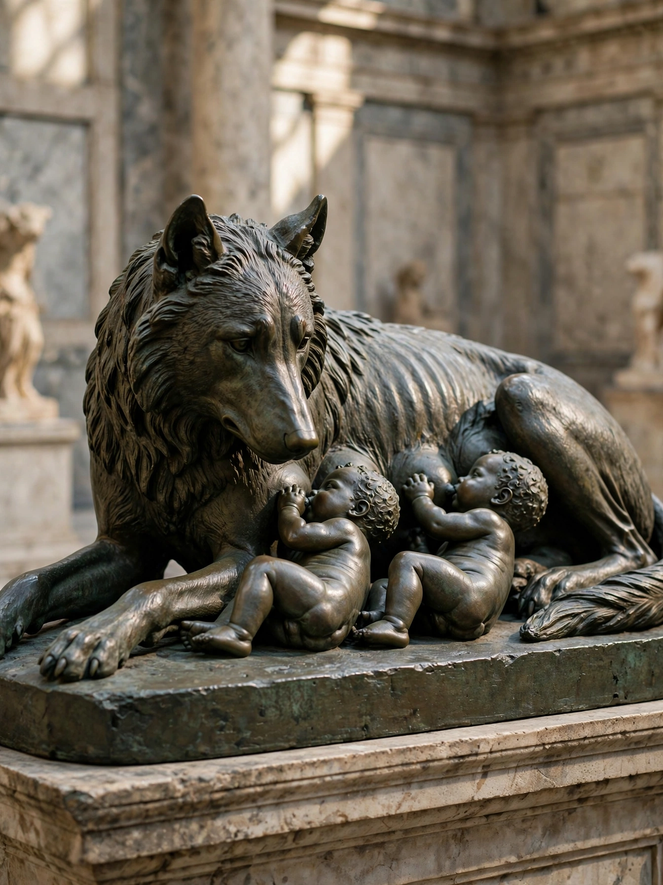

Romulus

| Romulus | |
|---|---|
| King of Rome | 753 – 717 BC (traditional) |
| Successor | Numa Pompilius |
| Mother | Rhea Silvia |
| Father | Mars (mythical) |
| Twin brother | Remus |
Romulus was the legendary founder and first king of Rome. According to Roman tradition, he and his twin brother Remus were the sons of the god Mars and the priestess Rhea Silvia, descended from the Trojan hero Aeneas. The founding of Rome is traditionally dated to 21 April 753 BC.
The legend
Exposed at birth on the banks of the Tiber by their usurping great-uncle Amulius, the twins were suckled by a she-wolf (the lupa) and raised by the shepherd Faustulus. As adults they restored their grandfather Numitor to the throne of Alba Longa and set out to found a city of their own. In the ensuing quarrel — over the site (Palatine versus Aventine), over the augury of birds, and over Remus's mocking leap across Romulus's new wall — Remus was killed, in most versions by Romulus himself.
King of Rome
Romulus populated his city by offering asylum to outcasts and, lacking women, seized brides for his men in the Rape of the Sabine Women, leading to war and eventual union with the Sabines under Titus Tatius. Tradition credits Romulus with creating the Senate, the legions, the comitia curiata, and the Roman calendar. He reigned, in the traditional account, for 37 years.
Death and deification
Romulus was said to have vanished in a storm or whirlwind while reviewing his troops, and was deified as the god Quirinus; a later rationalising tradition held that the senators murdered him. Livy, Plutarch (in his Life of Romulus), and Dionysius of Halicarnassus are the main ancient sources, and modern scholars treat the story as legend elaborated over centuries rather than history.